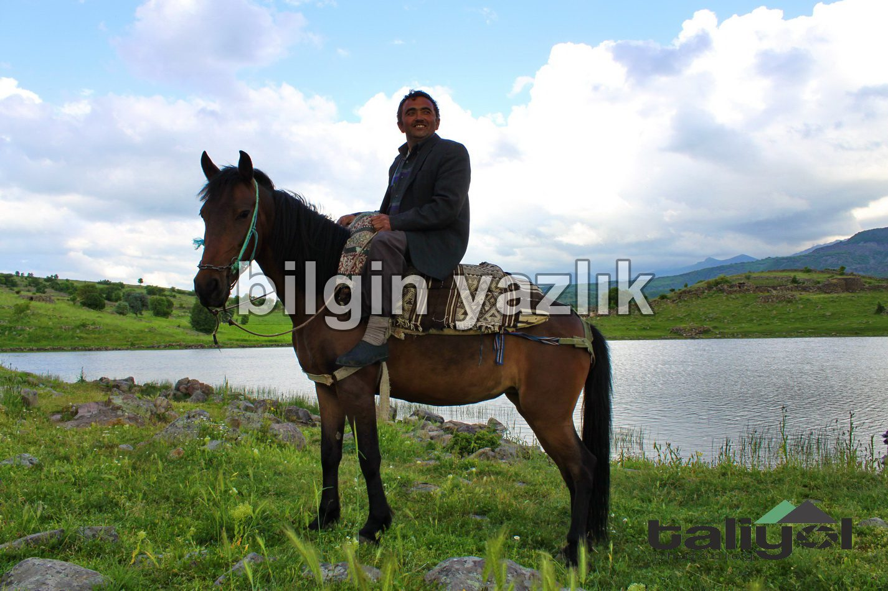
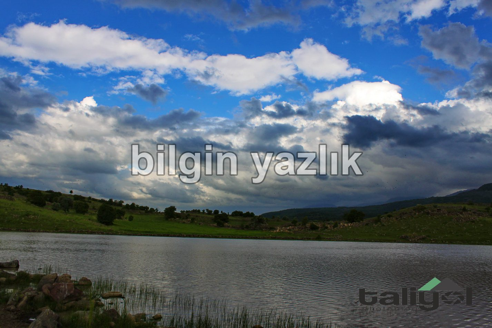
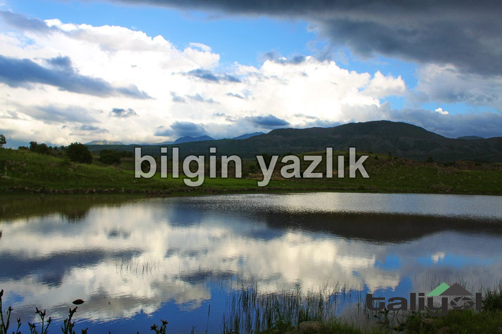

Çatal Göl
Hacılar – Kızılören yolundan ulaşılabilen birikme su gölüne Avşar Mahallesi içinden ulaşılabilmektedir. Otomobille ulaşılması imkansız göle ancak jeeple veya yürüyerek ulaşılabilmektedir. Gölün rengi birikme su olduğu için çamur tonundadır. Gölde yaban ördeklerine rastlamak mümkündür. Gölün suyunun sonbahar aylarında tamamen çekildiği anlatılmaktadır. Göl kenarında hayvan otlatan Ramazan çoban ile tanıştık, at üstünde 5-6 inek otlatan Ramazan çoban, tüm gününü Çatal göl kenarından geçiriyormuş. Gölün civarı Avşar Mahallesi sakinleri tarafından parsellenmiş ve çoğunlukla buğday ekimi için kullanılmaktadır. Buğday biçen Ali Dede, İstanbul’u bırakıp özlediği köyüne geri dönmüş. Göl kenarında yığma taşlardan oluşturulmuş çok sayıda bağ evi bulunmaktadır. Burada göl olamaz diyeceğiniz, haritalarda göremeyeceğiniz bir bölgede yer alan bu küçük gölü mutlaka görmelisiniz.



Bu yazı taliyol arşivinden taşınmıştır. · özgün kayıt